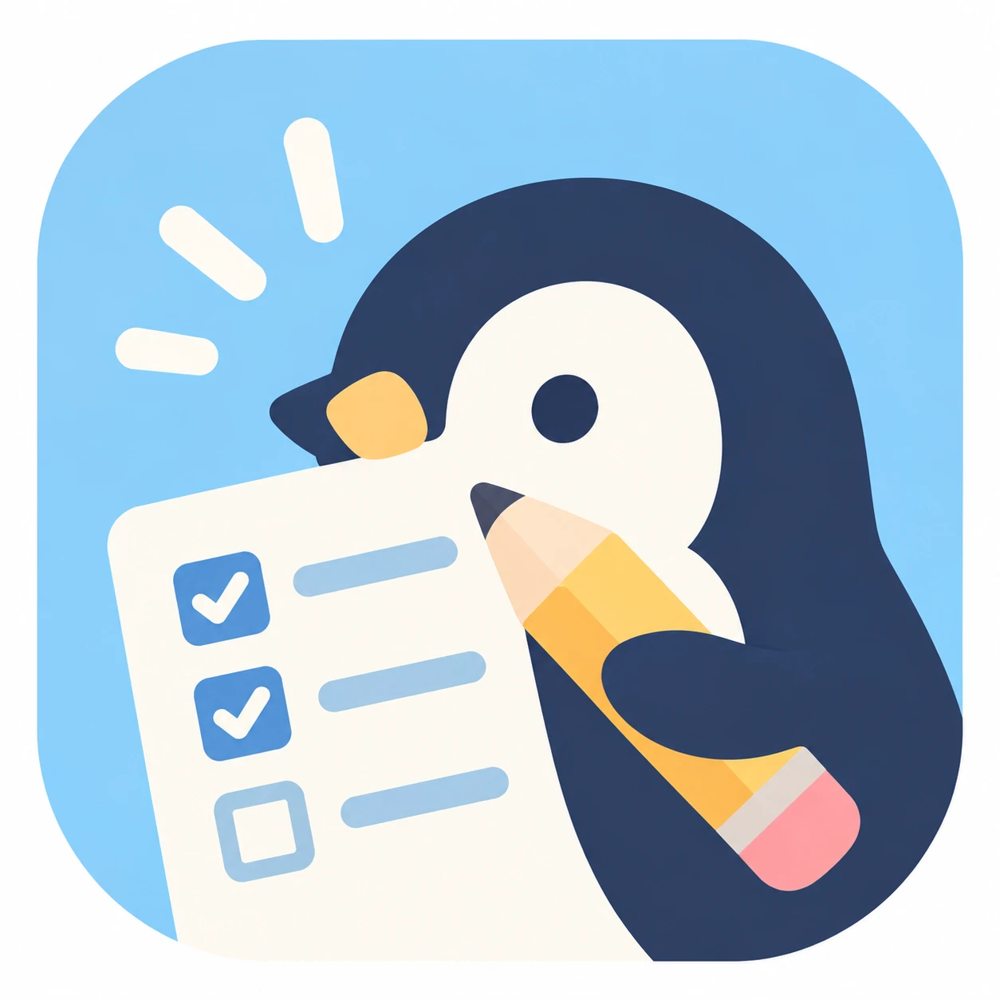

パソコンの画面の中央に、毎朝10時にこんな小さなウィンドウが出ます（モック・ダミーデータ）

10月10日(土) · 10:00
いつかやること
✕
期限切れ 1
もうすぐ 2
未完了 7
請求書を送る
期限切れ · 10/08(木)
仕事
パスポートを更新する
10/20(火)まで · あと10日
プライベート
京都で紅葉を見る
11/30(月)まで · あと51日
プライベート
写真をアルバムにまとめる
12/31(木)まで · あと82日
ピアノをもう一度はじめる
いつでも
プライベート
ほか 2件
アプリを開く
閉じる